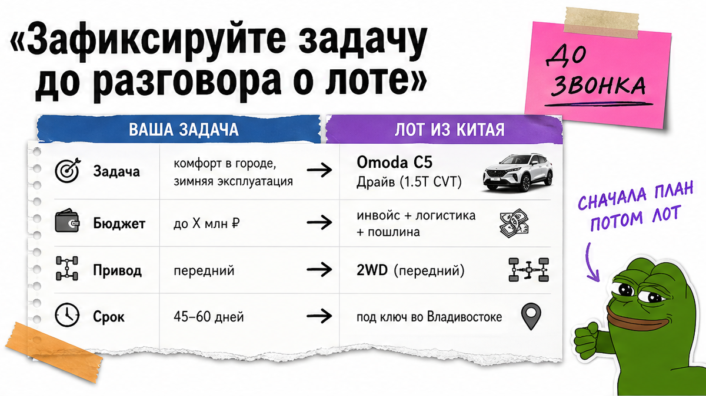
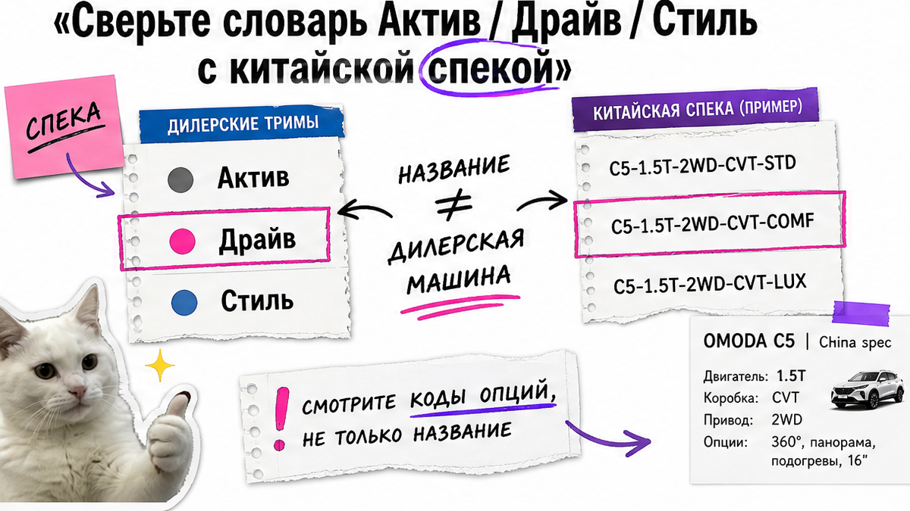
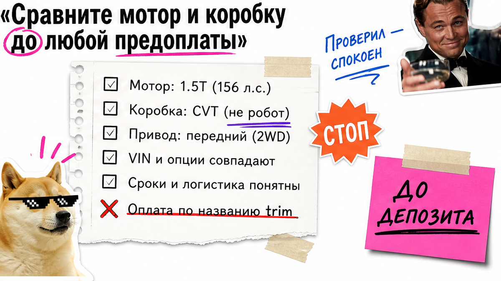

Антон из Новосибирска уже почти кинул задаток за "Omoda C5 Драйв как у дилера, только дешевле из Китая". На СВХ – вариатор вместо робота, без подогрева заднего ряда и китайское меню. Боль знакомая: перепутать Актив/Драйв/Стиль с лотом и получить другую машину без заводской гарантии. Проверьте спеку, соберите чек-лист до депозита – результат: "беру / не беру / пересогласовать" без покупки вслепую.
Коротко до депозита: В РФ у нового поколения C5 2026 официально три русские комплектации – Актив, Драйв и Стиль – на 1.5T 147 л.с. с роботом DCT6. Из Китая часто едут другие связки: 1.5T с CVT около 156 л.с. или 1.6 TGDI около 197 л.с. Название "как у дилера" не гарантирует ту же машину. Депозит – только после зелёного чек-листа по мотору, КПП, приводу, зимнему пакету, VIN и договору.
Мы в Авто-Сейлс во Владивостоке спокойно разбираем такие заказы с человеком, который впервые везёт кроссовер из Китая и уже почти оплатил красивый скрин. На практике спор "это же Драйв" начинается там, где в спецификации нет списка опций на русском. Словарь дилера нужен, чтобы сравнивать железо, а не вывеску.

Пока не ясно, где машина будет жить зимой и нужен ли полный привод, любой "максимальный" лот выглядит соблазнительно. Сначала коротко на бумаге: город, нужен ли полный привод, обязателен ли зимний пакет, бюджет "до ключей" без самодельных расчётов пошлин.
Делать: идти в подбор с must-have списком. Не делать: выбирать по слову "максималка" – на практике за него часто платят лишнее без нужной зимы.

Официальный релиз OMODA для РФ держит три уровня: Актив, Драйв, Стиль. Это удобный словарь для разговора с подборщиком, а не ярлык на китайском аукционе. Экспортные Comfort / Luxury / Sport и старые Fun / Lifestyle звучат похоже, но не равны "Драйву" у дилера.
| Уровень RU | Что обычно ждёте | Что проверить в лоте из Китая |
|---|---|---|
| Актив | LED, 4 подушки, медиа 12,3", камера и задние парктроники, диски 17" | Есть ли камера, парктроники и тот же класс медиа – списком, не "базой" |
| Драйв | Кожаиск., электросиденье водителя, подогрев 2 ряда, климат 2 зоны, электробагажник, 360°, BSD, экран 15,6" | Подогрев заднего ряда, 360°, электробагажник и язык меню |
| Стиль | Люк, вентиляция сидений, ADAS (круиз, ассистент в пробках), 8 динамиков | Реально ли есть ADAS и вентиляция, а не только люк на фото |
Типичная ошибка – оплатить "Драйв", увидев кожу и большой экран. Например, без подогрева второго ряда и без 360° это уже не тот уровень ожиданий. Делать: сравнивать опции строка к строке. Не делать: платить по названию trim из рекламы.

Вот сюрприз для новичка: у дилера в РФ после рестайлинга 2026 в линейке 1.5 турбо 147 л.с. и робот DCT6, а из Китая нередко приезжают другие пары. CVT – это вариатор, плавная "бесступенчатая" коробка. Робот DCT – две сцепления и другой характер разгона. Путать их дорого: и по ощущениям, и по спору после СВХ.
| Связка | Где чаще встречается | На что смотреть |
|---|---|---|
| 1.5T 147 л.с. + DCT6 | Официальный RU 2026 | Эталон для сравнения с лотом |
| 1.5T ~156 л.с. + CVT | Китайский передний привод | Не "тот же Драйв", другая коробка |
| 1.6 TGDI ~197 л.с. + 7DCT | Китайские более мощные версии | Отдельный расчёт "под ключ": льготный утиль ориентирован на машины до 160 л.с. |
Схема сверки железа:
Карточка лота → Мотор и л.с. → КПП (CVT или робот) → Привод → Список опций на русском → Решение по депозиту
Делать: вписать в карточку лота мотор, силы и тип коробки до предоплаты. Не делать: считать цену "под ключ" по чужим скринам – актуальный расчёт только в каталоге.
У дилерской RU-машины зимний пакет обычно богаче. Китайские версии подогревы ставят выборочно. Если вы ждёте "как у дилера в Драйве", в спецификации должны быть подогревы руля, стёкол, сидений первого и второго ряда – всё, чего нет в списке, считайте отсутствующим.
Из практики: китайское меню на выдаче – частый сюрприз, если русификацию не прописали заранее. Делать: внести подогревы и язык меню в ТЗ на подбор. Не делать: верить фразе "зимний пакет полный" без перечня.
Параллельный импорт – это не дилерский салон с заводской гарантией OMODA. Условия даёт импортёр в договоре. Пока нет VIN (или ясного срока его получения до выкупа), фото/видео осмотра и понятного пункта про несоответствие комплектации – депозит рано.
Актуальные лоты и расчёты – в каталоге avto-sales125.ru, детали по конкретной C5 – в Telegram avtosales125. Форм на странице нет.
Делать: держать пакет документов до оплаты. Не делать: путать заводскую гарантию бренда с условиями договора на параллельный ввоз.
Критерий успеха простой: у вас заполненный чек-лист с галочками по мотору, КПП, приводу, списку опций и пакету документов. Вы получите понятный вердикт и сможете отказаться от лота без спора на СВХ. Пока хотя бы один пункт красный, депозит не обсуждается – это и есть рабочий результат новичка.
Нужен подбор под ключ без самостоятельного квеста по лотам – откройте каталог Авто-Сейлс с готовым списком must-have до перевода депозита.
Делать: ставить вердикт письменно. Не делать: "закрывать глаза" ради красивого цвета кузова.
После этого шага у новичка уже не покупка вслепую, а понятный первый результат: одностраничный чек-лист и решение без предоплаты на слово менеджера.
Материал проверен: Редакция Авто-Сейлс (эксперты по авто под заказ из Японии, Кореи и Китая).
Достоверность: сверка с официальным релизом комплектаций OMODA RU и прайсом C5 new (октябрь 2026), каталогом Drom по рестайлингу, обзорами отличий китайских лотов и практикой сопровождения заказов через Владивосток; актуальные расчёты "под ключ" – только в каталоге.
Официально для нового поколения – Актив, Драйв и Стиль на 1.5T 147 л.с. с роботом DCT6. Используйте этот словарь, чтобы сверять опции китайского лота, а не чтобы оплачивать "имя" с аукциона.
Другой парой мотор/коробка (CVT или 1.6 около 197 л.с.), более бедным зимним пакетом, китайским меню и гарантией импортёра вместо заводской. До депозита сверяйте спеку построчно.
Можно, если вы сознательно принимаете другую ставку утиля и заранее получили расчёт "под ключ". Не считайте экономию по чужим скринам – запросите цифры в каталоге до оплаты.
Город, привод, must-have подогревы и камеры, допустимые мотор/КПП, отказ от оплаты до VIN и списка опций на русском. Чем короче ТЗ, тем меньше риска "почти Драйв".
Только после зелёного чек-листа: железо совпало, зима и опции выписаны, VIN и осмотр есть, договор и гарантия импортёра понятны. Красный пункт – стоп.
Да, если вам важно русское меню и нормальный FM. Пропишите это в карточке лота до выкупа, иначе на выдаче часто ждут китайский интерфейс.